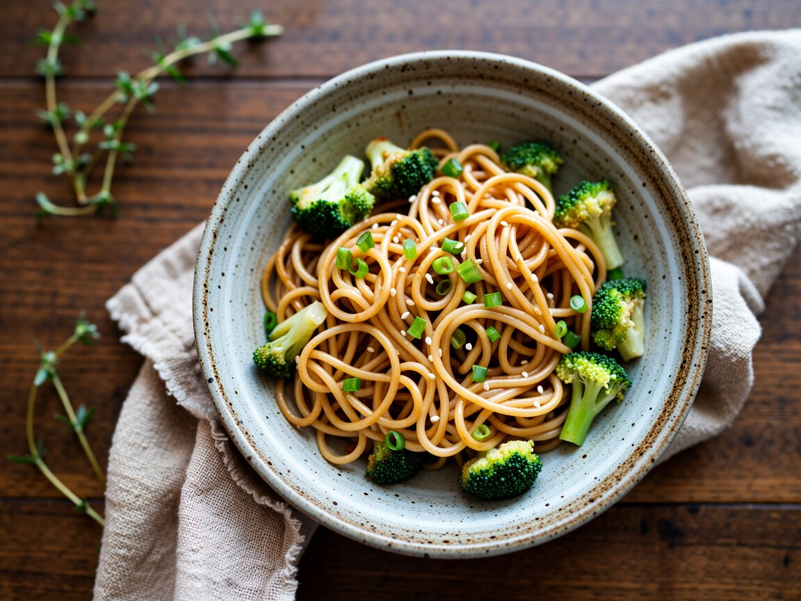

Erdnuss-Nudeln mit Brokkoli
Cremig, ein bisschen scharf und kalt fast noch besser.
Zutaten
- 250 g Spaghetti oder Mie-Nudeln
- 1 Brokkoli
- 3 EL Erdnussbutter
- 3 EL Sojasoße
- 1 EL Reisessig oder Limettensaft
- 1 TL Ahornsirup
- 1 Knoblauchzehe
- Chiliflocken oder Sriracha
- 2 Frühlingszwiebeln
- Sesam
So geht's
- Nudeln kochen, in den letzten 3 Minuten die Brokkoliröschen mit ins Wasser geben.
- Inzwischen Erdnussbutter, Sojasoße, Essig, Sirup, gepressten Knoblauch und Chili mit 4 EL heißem Nudelwasser glatt rühren.
- Nudeln und Brokkoli abgießen und mit der Soße mischen.
- Mit Frühlingszwiebeln und Sesam bestreuen.
Ein Drittel kommt in die Box: Morgen schmeckt es kalt wie ein Nudelsalat. Ein Spritzer Limette drüber, fertig.